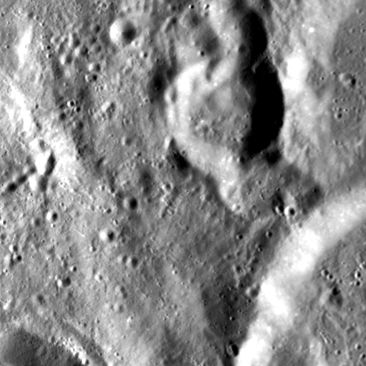

Actual state preparation
Loading the exported circuit…
Expanded from the actual representative block’s Initialize instruction using Qiskit’s U/CX decomposition. This shows preparation only; the edge-detection shift, Hadamard and measurements follow afterward. It is an equivalent gate decomposition, not a recording of individual gates executing on hardware.
Select a gate to inspect its qubits and exact rotation angles.
● Control on 1 · ⊕ Controlled-X target · U(θ, φ, λ) general one-qubit rotation, angles in radians · |0⟩ reset. Each page continues the same circuit; qubits are not reset between pages.